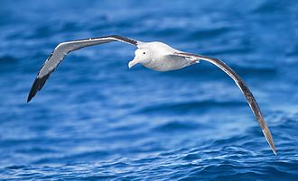
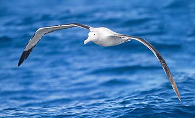
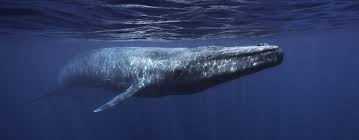
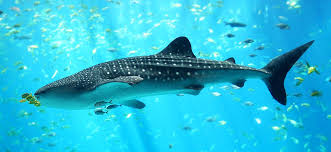

The Pacific Ocean is a body of salt water and is the largest and deepest ocean
in the world. It is home to the Mariana Trench, the deepest place in the ocean known
to mankind, along with many different species of animals we haven’t even found yet.
It got it’s name from an explorer called Ferdinand Magellan in the 16th centurty.
Many different typse of animals make the Pacific Ocean their home.
There’s the Albatross, which is a bird that has the largest wingspan of any bird.
Its wingspan can be as long as 11 feet! There are also many different types of
angelfish, starfish, and sea cucumbers. There are sea urchins that can live up to
200 years, the 3 different species of Rockhopper Penguin, and there’s the manta
ray that can grow up to 9 meters wide. There are lionfish, many different types of
sharks, eels, lobster, scorpion fish, otters, and sea turtles. Some of the largest
animals of earth live in the Pacific Ocean. There’s the blue whale, the largest
animal on earth. Its tongue can weigh as much as an elephant! The whale shark is the a gentle giant,


and it can only eat animals the size of a quater.
The Mariana Trench is located in the western Pacific East of the
Philippines and is a crescent shaped scar in the Earth’s crust that measures
more than 1500 miles long and 43 miles wide.
The deepest point in the Mariana Trench is called Challengers Deep, and
is so deep that light cannot come and the air pressure can dissolve bones. Only
2 people have made it down to Challengers Deep. They were Jacques Piccard
and Navy Lt. Don Walsh. In 1960, they made it down to Challenger Deep in a
bathyscaphe, a type of deep sea submersible. They were only down there for 20
minutes, and were unable to take any pictures due to the clouds of silt blocking
their path.
Scientist have sent half a dozen machines to explore Challenger Deep,
including Kaiko, which collected over 3000 new species from 1995-2003. Even
though Kaiko has collected so much data, scientists still believe that there are
around 1000 more species in the ocean to uncover.